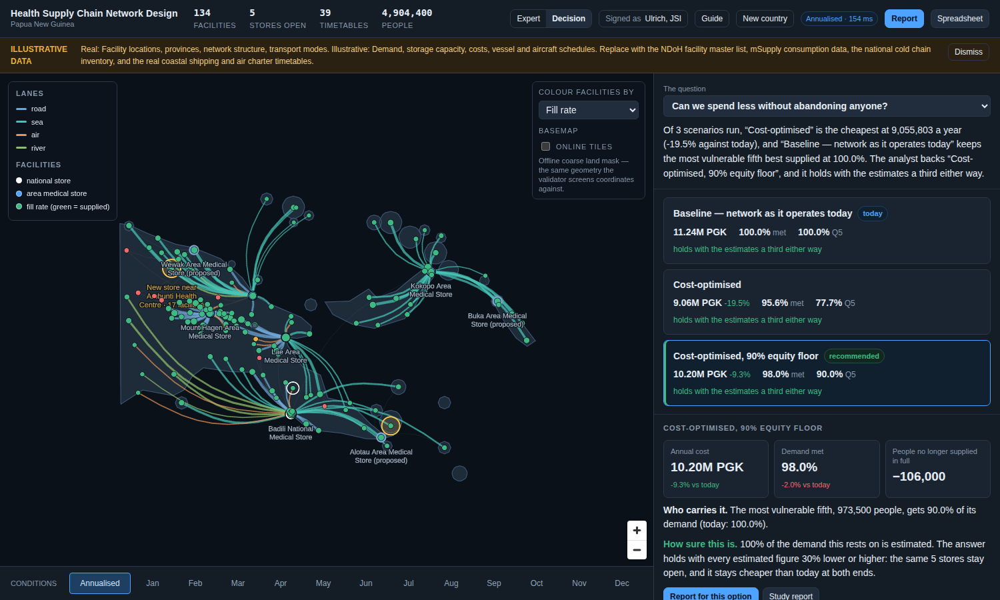
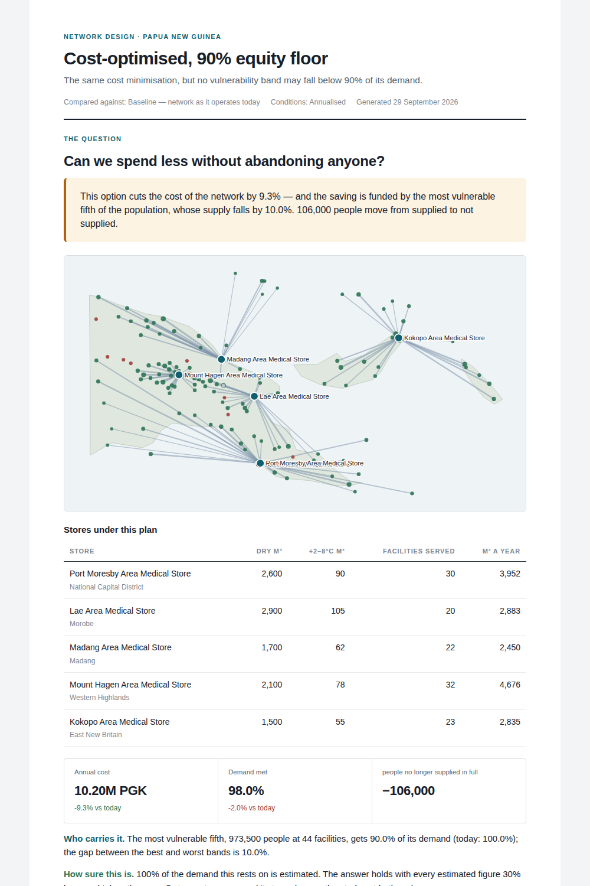
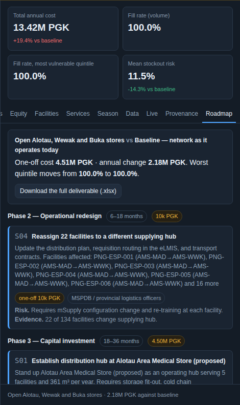

04 · Decide
Page one, generated in front of you
Pick one of the demo's scenarios and its decision page renders here from the stored result: the recommendation in a sentence, the stores on a map, three numbers against today, who carries it, and how sure the answer is. This is the page a director reads; everything else in the report is the evidence for it.
Loading the demo results…
Generated from app/api, the same pre-solved results the demo serves. In the tool the report is one self-contained HTML file per scenario and per study, printable to PDF from any browser, with the assumptions annex at the end.
In the tool


